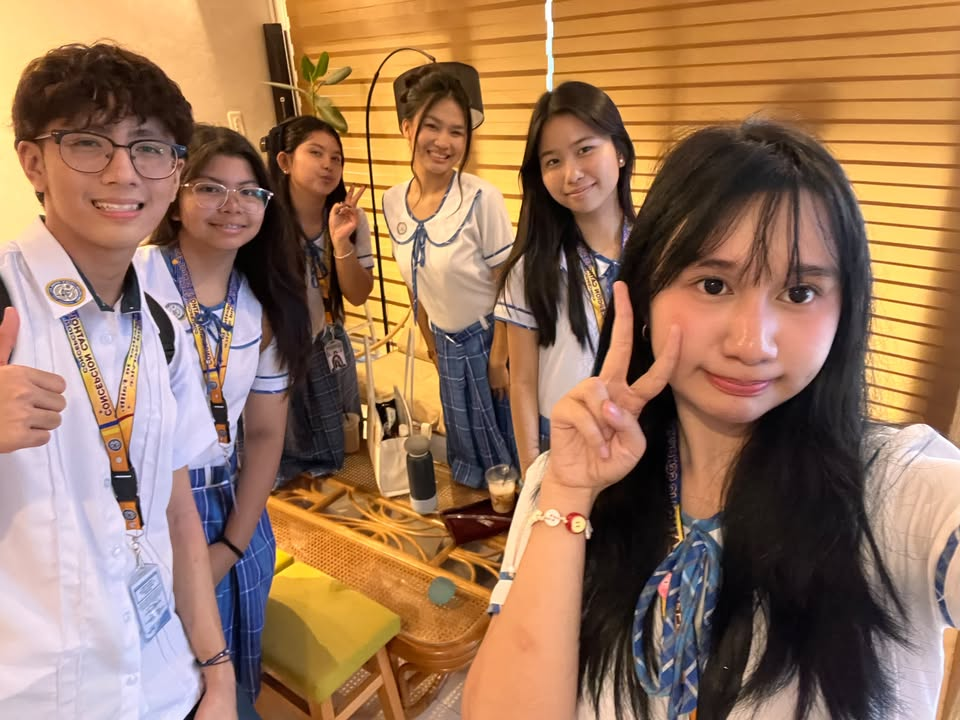
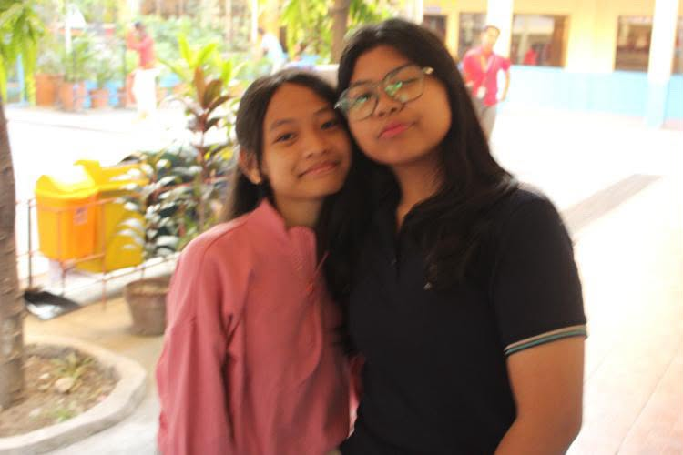
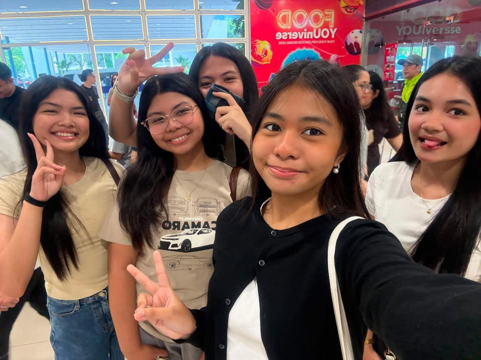
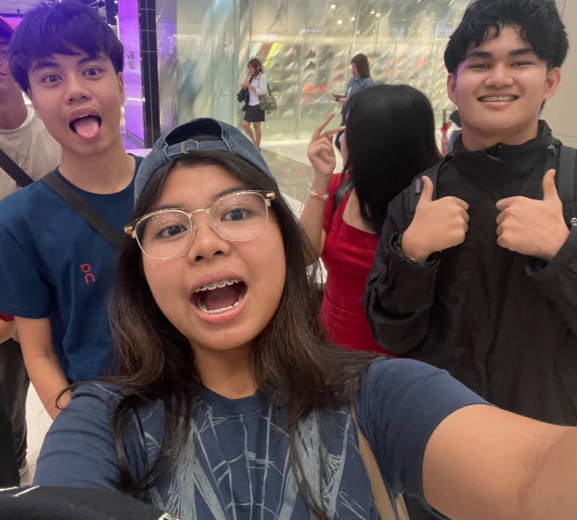
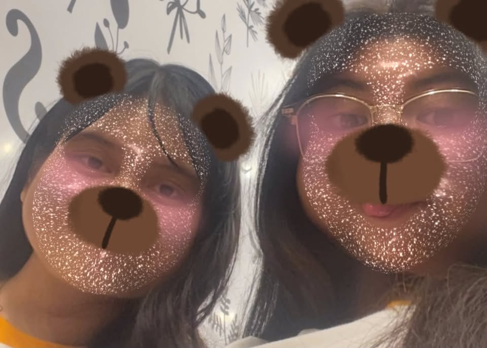
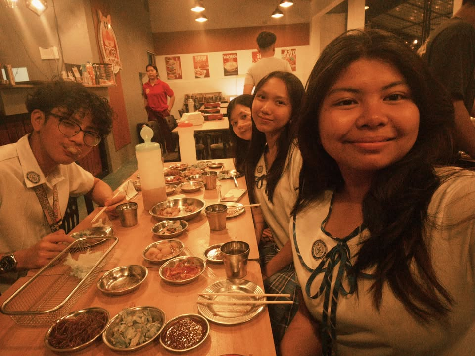
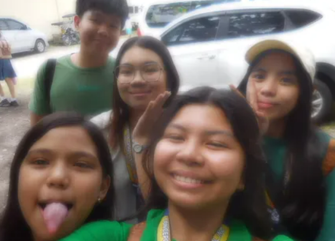

Kyle EJ Aiane Erica Matilda
- He's my partner in crime
- He's good at singing and playing games
- He's also a good advicer
- She's my rant buddy
- She may look fierce, but she has a soft heart
- She's a trustworthy friend
- She is a very confident girl
- She can bring joy to the room easily
- She's my "service" everywhere we go, thanks to her e-bike
- She's my ride or die
- She's one of the first friends I found in CCS
- She loves hanging out with me
- She's a great listener
- She understands me and helps me
- She can make you laugh effortlesly

Chenelle
- She's my friend since 5th grade
- She's my other half and my closest pal
- I treat her as my younger sibling

Jhenel Francheska Marga Kate
- She is a very awesome friend
- She is my journalism buddy
- She is an intelligent girl
- She is my laughing buddy
- She is a very good friend
- She's my Roblox and Valorant buddy
- She's a great gamer
- She's my favorite seatmate
- She loves to "chika" with me whenever we have our freetime

Lex and Ezekiel
- They are both my friends since 8th grade
- They make me laugh even when I don't want to
- They crack the funniest dad jokes

Chase
- She is my soulmate
- She's the person I run to when life feels heavy
- She is my CODM buddy and my duo

Jam and Asha
- I met these 2 beautiful ladies throug Kyle
- They are my hang-out buddies
- They make me happy ereytime we hang-out in eachother's houses

Gab, Amara, Jen, and Isha
- They are my photojournalism bestfriends
- They always help me when I need something in journalism
- They are also my friends even outside journalism